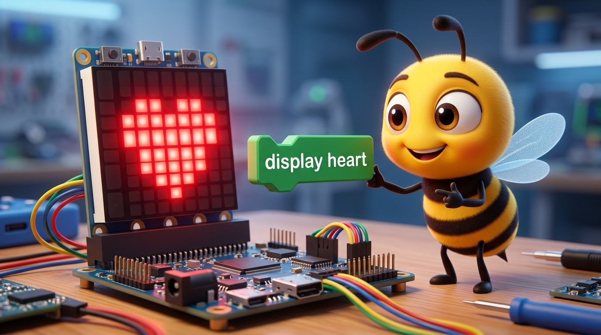

Beekoding
Platform Edukasi Koding & AI
STAGE 3: SESI 26
Selamat datang di STAGE 3: SESI 26! Hari ini kita melangkah ke dunia Sensory & Physical Computing dengan menguasai Menyalakan 25 Lampu LED Merah pada Papan Micro:bit Menjadi Ikon Hati Berdetak & Emotikon.

Dalam Physical Computing, komputer tidak hanya diam di meja—ia bisa merasakan dunia sekitar! Mari uji coba bagaimana sistem 5x5 LED Pixel Grid & Frame Animation merespons aksi kita pada simulator di samping!
Kita menggunakan balok ekstensi khusus berwarna hijau zamrud untuk membaca sinyal perangkat keras dan menyiapkan variabel awal saat program dijalankan.
Ketika sensor mendeteksi perubahan (tombol ditekan, alat digoyang, atau nilai melewati batas), balok kondisi akan langsung menggerakkan karakter di panggung!
Tidak hanya alat yang mengendalikan layar, panggung Scratch juga bisa mengirim balik perintah untuk menyalakan matriks LED atau memicu perayaan kemenangan!
Setiap gadget pintar di dunia nyata—mulai dari jam tangan pintar hingga mobil otonom—selalu bekerja mengikuti 4 tahapan sistematis ini:
Integrasi mulus antara sensor perangkat keras dan logika pemrograman visual Scratch 3.0!
Mari kita uji proyek interaktif kita! Klik bendera hijau dan gerakkan kursor/sensor untuk menangkap target sambil mengamati respons 5x5 LED Pixel Grid & Frame Animation!
Saat merakit perangkat keras dan koding, ketelitian adalah kunci utama! Yuk perhatikan perbandingan kesalahan umum dan solusinya berikut ini:
foreverSelamat! Kamu telah menguasai eksperimen Menampilkan Animasi LED Matriks 5x5 & Senyum Digital di Stage 3. Mari kita ingat 3 poin terpenting hari ini:
Kamu resmi menguasai modul Physical Computing Sesi 26 di Beekoding Academy!
Karya gadget interaktifmu semakin canggih! Jangan lupa simpan proyek Scratch-mu dan rapikan kembali peralatan elektronik ke tempatnya.
File ➔ Save to your computer di ScratchTetap semangat bereksplorasi dan mencipta teknologi masa depan bersama Beekoding Academy!